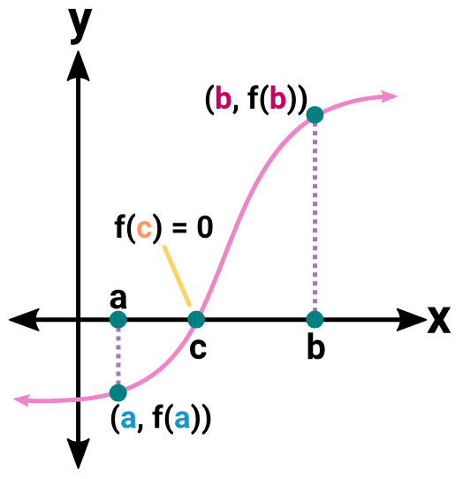
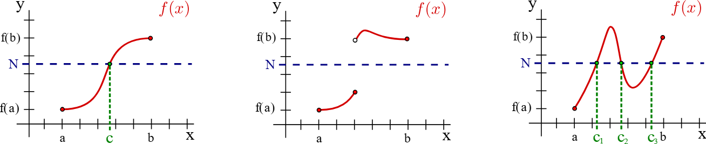
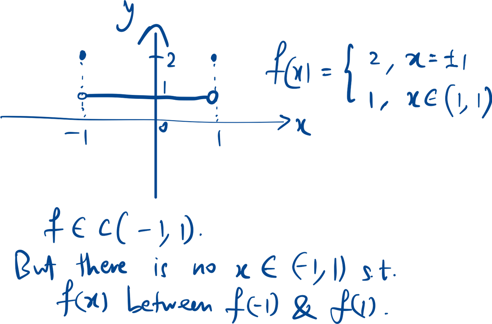
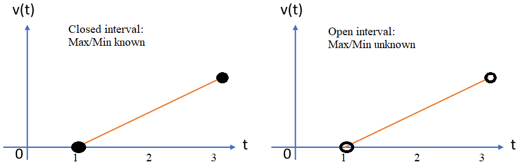

Definition
**A function is continuous at isolated points in the domain. Define
an open interval such that a is the only element in the interval. Then
f(a) = f(x) for all x in the interval.
Proving that f is continuous at x=c means showing that lim(x →
c){f(x)} = f(c).
Elementary functions are continuous on their natural domains.
E.g. constants and powers of x, exponential, logarithm, (inverse) trigo.
Composite functions
Further implication: if f(a) and f(b) have different signs, there
exists a root for f(x) = 0.

If f is not continuous, IVT may not hold:

If f is not continuous on closed interval, IVT may not hold:

Min/max theorem
The function is bounded.
f has to be continuous on a closed interval.
Counter-example: for any x in (1, 3), we can always find a number
that’s larger.
Pick x=2.9, we can find some y such that x < 2.99 < 2.999 <
2.9999 < … < y

Injective (one-to-one)
function
Inverse function